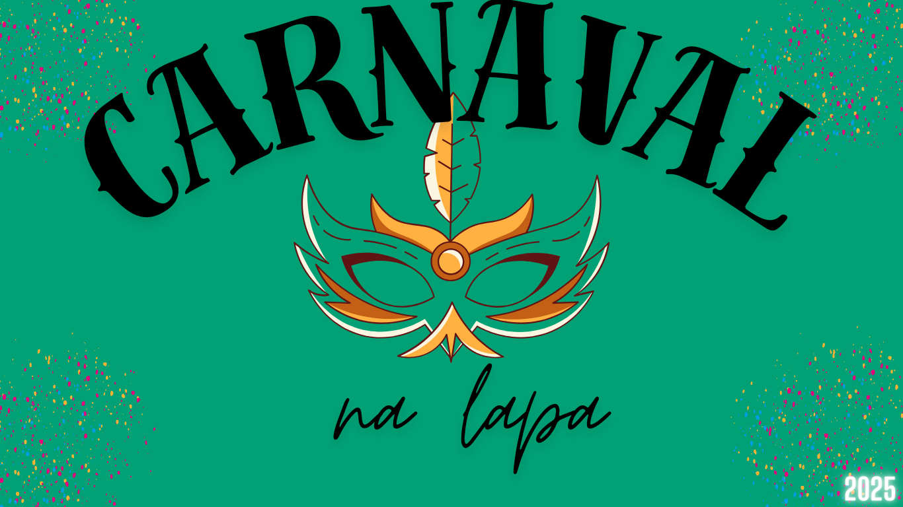

carnaval na lapa
O Carnaval na Lapa, no Rio de Janeiro, é uma das festas mais animadas e tradicionais do carnaval carioca. A Lapa, famosa por sua vida noturna e pelo icônico Arcos da Lapa, se transforma em um ponto de encontro vibrante para foliões durante o carnaval. Ali, a mistura de samba, blocos de rua, bares e o charme do centro histórico cria uma atmosfera única. Durante o carnaval, a Lapa se enche de blocos de rua, cada um com sua identidade e estilo musical. Alguns blocos são mais focados no samba, outros na marchinha, no funk ou até no axé. A praça e as ruas ao redor dos Arcos ficam repletas de foliões que cantam, dançam e se divertem, em um ambiente descontraído e democrático. Além disso, a Lapa é famosa por seus bares e casas de shows, onde muitos blocos e bandas fazem apresentações. A região é um dos centros mais badalados do Rio durante o carnaval, e a festa se estende até a madrugada. O Carnaval de Rua da Lapa é menos formal que os desfiles das escolas de samba, mas tem um apelo cultural e um espírito de celebração comunitária que é muito característico do carnaval carioca. A região também oferece uma ótima oportunidade de vivenciar o carnaval de uma forma mais espontânea e interativa, onde qualquer pessoa pode participar sem grandes custos.
